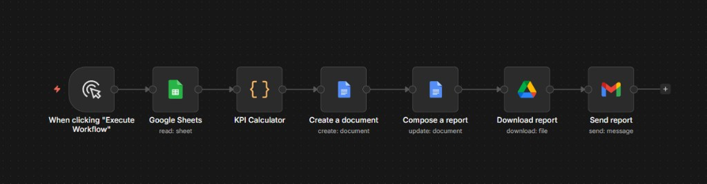

Turning 2 hours of manual labor into 60 seconds of mathematical precision.
JDRS operates on the "1-System" logic — a streamlined data collection method that ensures zero friction for your staff while providing 100% accurate metrics.
The system scans thousands of data points instantly, identifying performance markers without human intervention.
Every finding is compiled into a professional Microsoft Word document, styled specifically for Jorrel's executive standards.
The report is automatically dispatched via Gmail API to stakeholders, ensuring the team is always aligned.
Each HR manager works with simple "1" markers in Google Sheets, while JDRS handles all formulas and KPI calculations in the background.
Currently, JDRS relies on Deterministic Code & Mathematics. No AI hallucination, just pure data extraction. It is fast, stable, and reliable.
We are ready to integrate Artificial Intelligence to analyze results against Jorrel's internal policies and manuals, providing custom strategic recommendations.
The MVP workflow is already assembled in n8n and now includes both KPI calculation and automated Google Docs report generation.

Choose the level of intelligence for your operational reporting.
Full automation of the current 25 systems.
Core system + AI Recommendation Engine.